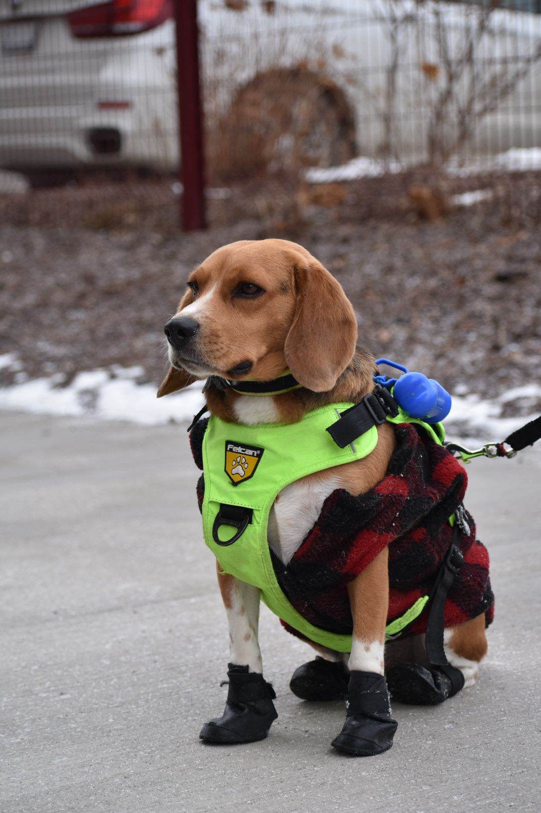

Hunting Dog
As a beagle, it is a hunting dog. Its favorite is rabbit hunting, but in Canadá he loves to chase squirrels. However, None is hurt
.jpeg)
As a beagle, it is a hunting dog. Its favorite is rabbit hunting, but in Canadá he loves to chase squirrels. However, None is hurt
It loves people, loves kids, and grandparents. It knows how to make friends. It is also important to mention that it learns how to socialize with other dogs, they use an universal lenguague. It is fun to see how they can share information withouth talking.
As a beagle, it is a hunting dog. Its favorite is rabbit hunting, but in Canadá he loves to chase squirrels. However, None is hurt
It loves people, loves kids, and grandparents. It knows how to make friends. It is also important to mention that it learns how to socialize with other dogs, they use an universal lenguague. It is fun to see how they can share information withouth talking.
He loves wallowing in the snow, he eats snow and run like a crazy dog every time he touches snow. For him, a snowfall means fun time